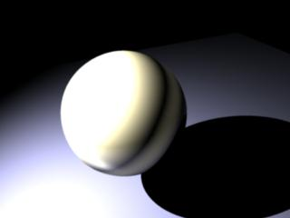
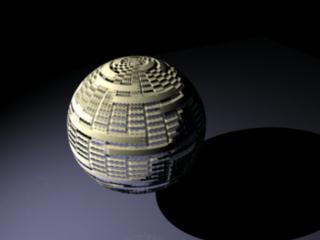

|
Texture Shaders - bump mapping
This section shows how to use bump maps on mental ray shaders.
This is a little more complex, compared to other shaders,
because the base shaders do bump mapping with a shader called mib_passthrough_bumpmap,
which is intended to be called in a shader list before the material shader
is called. The shader modifies the normal in the state so that the material
shader works with the modified normal. However, shader lists in materials
are not supported yet in mental ray for Maya.
The work around is to use the mib_color_mix shader to call the
mib_passthrough_bumpmap shader before the material shader is called.
References:
See mental ray User Manual, Chapter 3.2.
mental ray Shaders Guide, Chapter 1.2.
Rendering with mental ray, Chapter 4, Appendix C.
Step
1. Getting Ready
Make sure the mental ray for Maya plug-in is loaded.
·
Windows > Settings/Preferences > Plug-in
Manager...
·
Find Mayatomr and check loaded
Open textureShaders_bump_start.ma.
This scene has a sphere, a plane and a spot light. Note that the spot light
uses mental ray light shader – a physical light with very high intensity.
|

|
|
textureShaders_bump_start.ma
|
Step 2. Floor
- Let's
assign a dgs_material to the floor
- Select the shading engine of the floor,
floorSG.
- From the Attribute Editor of floorSG,
open mental ray section.
- Go to Custom Shaders section.
- Click the map button next to Material
Shader.
- From the Create Render Node bar,
choose mental ray tab.
- Select dgs_material from the Materials
section.
- Rename dgs_material1 to floorMat.
- Check the connection between the shader and
the shading engine. Material shaders are connected to shading
engine's miMaterialShader by default.
- Change
the parameters of floorMat.
Step 3. Ball
|

|
|
Dgs_materials
|
Step 4.
mib_passthrough_bump_map
Now we are going to add a bump map to the ball.
- Create a
mib_passthrough_bump_map shader from Hypershade > Create
mental ray Nodes > Textures.
- Select mib_passthrough_bump_map1 node and open
the Attribute
Editor.
- First, we have to set Bump Effects
section:
- Create
a bump_basis node from Hypershade > Create mental ray Nodes
> Textures.
- Connect
mib_bump_basis1.u to mib_passthrough_bump_map1.u, mib_bump_basis1.v to
mib_passthrough_bump_map1.v,
- MMB drag mib_bump_basis1 to
mib_passthrough_bump_map1.
- From the Connection Editor:
- Select U from the left pane, U from the
right pane.
- Select V from the left pane, V from the
right pane.
- Second, we need to adjust the Texture
Coordinates section.
- Only coord needs to be adjusted, and
the rest can be left untouched for now.
- We are going to connect mib_texture_vector.outValue
to mib_texture_remap.input, and mib_texture_remap.outValue to
mib_passthrough_bump_map1.coord.
- See mental ray User Manual, Chapter 3.2
Coordinate Systems, and mental ray Shaders Guide, Chapter 1.2 Texture
Space Mapping, for more details.
- Create a
mib_texture_vector node from Hypershade > Create mental ray
Nodes > Textures.
- Set selspace
to 1, meaning object space.
- Create a
mib_texture_remap node from Hypershade > Create mental ray
Nodes > Textures.
- MMB drag mib_texture_vector1 to
mib_texture_remap1, and select
input .
- MMB drag mib_texture_remap1 to
mib_passthrough_bump_map1, and select
coord .
- Finally, we can assign a file texture for
bump mapping.
- Select mib_passthrough_bump_map1 and open its
Attribute
Editor again.
- In the mental ray Texture section,
click the map button
next to tex.
- This button creates a mental ray file
texture node, and opens its Attribute Editor.
- From the Attribute Editor of
mentalrayTexture1, choose a file for bump mapping.
- In this scene, we use carbon_raport.rla in
sourceimages directory.
Step 6. Using
mib_color_mix to use shader list
Step
7. Finish
Now all the connections are made.
Select
mib_color_mix1 node and check input output connection.
Render
with mental ray.
The bump map is applied to dgs_material.
If you do not see the bumps, check the shading network connections in textureShaders_bump_finish.ma.
|

|
|
dgs_material
with bump.
textureShaders_bump_finish.ma
|
|